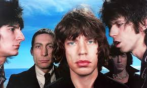
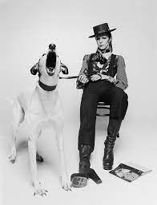
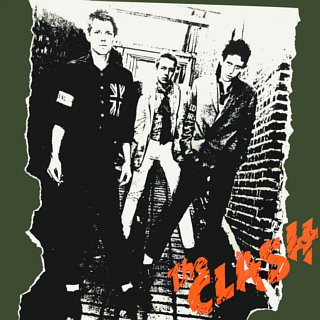
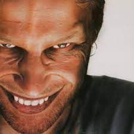
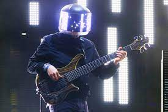

I chose these artists as i believe they best display the range of my musical interests and inspirations.
| Artist | Year of entery | Brief Description | Images | The Rolling Stones | 1962 | The Rolling Stones are a British rock group, that drew on Chicago blues stylings to create a unique vision of the dark side of post-1960s counterculture. The original members were Mick Jagger, Keith Richards, Brian Jones, Bill Wyman, and Charlie Watts. |  |
|---|---|---|---|
| David Bowie | 1969 | David Bowie, original name David Robert Jones, (born January 8, 1947, London, England—died January 10, 2016, New York, New York, U.S.), British singer, songwriter, and actor who was most prominent in the 1970s and best known for his shifting personae and musical genre hopping |  |
| The Clash | 1978 | the vanguard of British punk, The Clash would soon become the most iconic rock band of their era, a symbol of intelligent protest and stylish rebellion in the turbulent years of the late '70s and early '80s. |  |
| Aphex Twin | 1992 | Richard David James (born 18 August 1971), best known as Aphex Twin, is an Irish-born British musician, composer and DJ. He is known for his idiosyncratic work in electronic styles such as techno, ambient, and jungle. |  |
| Square Pusher | 1996 | Tom Jenkinson (born 17 January 1975), known professionally as Squarepusher, is an English electronic musician, record producer, bassist, multi-instrumentalist and DJ. His music spans several genres including drum and bass, IDM, acid house, acid techno, jazz fusion, and electroacoustic music. |  |